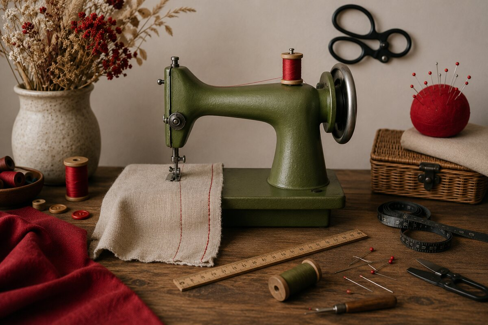
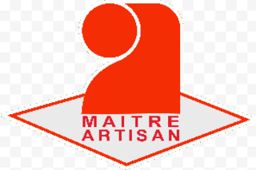

Sur-mesure
Robes, vestes, pantalons et tenues adaptées à votre silhouette.
Créations sur mesure, robes de mariage, robes de soirée, retouches, accessoires et initiation couture.
Une lecture simple des services pour comprendre rapidement ce que l'atelier peut créer, ajuster ou transmettre.
Robes, vestes, pantalons et tenues adaptées à votre silhouette.

Ourlets, fermetures, recintrage, doublures et transformations.

Robes nuptiales, tuniques et finitions délicates pour le grand jour.

Nœuds papillon, sacs, tabliers, écharpes et pièces utiles.

Tenues confortables, colorées et pensées pour les occasions.

Cours sur mesure pour débuter, progresser et créer.
Créée en 2003, Faty Style accompagne les projets de robe de mariage, robe de soirée, vêtement sur mesure, retouche et accessoire textile. Fatima Abajjane met son expérience d'artisan couturière au service de pièces uniques, pensées pour votre style et votre silhouette.
Chaque création naît d'un échange, d'un choix de matière, d'une coupe précise et d'une finition soignée. L'atelier accueille à Limay les mardis et samedis matin, ou sur rendez-vous.


Une reconnaissance officielle du savoir-faire, de l'expérience et de l'exigence artisanale.
Faty Style bénéficie du titre de Maître Artisan en métier d'art, une distinction qui valorise un savoir-faire reconnu, une maîtrise technique et un haut niveau d'exigence dans le travail artisanal.
Ce titre souligne l'expérience, la précision du geste et le soin apporté à chaque projet, de l'écoute du besoin jusqu'aux finitions.
Un aperçu maîtrisé du travail de l'atelier : robes, ensembles, accessoires et pièces enfants, sans transformer l'accueil en galerie interminable.
Du premier échange jusqu'à la pièce finale, chaque étape sert le confort, le tombé et l'élégance.
Comprendre votre envie, votre morphologie et l'occasion.
Choisir les tissus, détails et finitions adaptés au projet.
Construire une base propre avant la réalisation.
Ajuster, contrôler et soigner les derniers détails.
Les avis authentiques de l'atelier sont consultables directement sur la fiche Google Faty Style.
Consultez les retours publiés directement par les clientes sur la fiche Google de l'atelier.
Faty Style accompagne les projets couture sur rendez-vous, avec un échange direct et humain.
Le lien Google permet de lire les avis, voir la fiche établissement et préparer votre prise de contact.